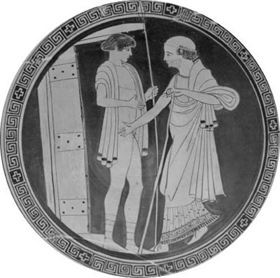

Troya kralı Priyamos'un eşiydi kraliçe Hekabe
Kraliçe Hekabe, Troya sarayına gelin geldiğinde, kocası kral Priyamos'un otuz kadar çocuğu vardı... Kısacası kendinin doğurduğu yirmi çocukla birlikte elli çocuğa analık etmeye başladı... Zaten bu yüzden de Troyalılar ona Hekabe Ana diyorlar; hepsi de onu bir ana olarak benimsiyor, çok seviyorlardı... Troya halkı da, saraydaki Priyamos ailesi de savaşsız bir yaşamın bütün nimetleriyle mutlu mutlu, günlerini gün edip gidiyorlardı. Ne var ki güzel Hekabe'nin mutluluğu, son çocuğu Paris'e gebeyken gitgide çileli bir yazgıya dönüşmeye başladı...
Bir gece şişkin karnından alevlerle karışık kara kara dumanlar püskürdüğünü gördü düşünde. Dumanlar bütün Troya göklerini sardığı gibi, surları da aşıp ta güneşin doğduğu yerlere doğru savrula savrula çekilip gidiyordu... Uyandığında da yüreği zıpkın yemişçesine çırpınmaya başladı. Hiçbir anlam veremedi bu düşünde gördüğü ürkünç şeylere! Üstelik danıştığı saray bilicisi de hiç hayra yormadı bu düşü... Doğuracağı çocuğun ülkeye yıkımlar ve kırımlar yağdıracağını söylemekle yetindi. Gerçekten de kendi öz kızı bilici prenses Kassandra da aynı şekilde yorumladı bu düşü. O yüzden de çocuğunu doğurur doğurmaz Hekabe, kocası kral Priyamos'la birlikte onu Kazdağları'nda, ulu ağaçlar içindeki bir koruluğa bırakıp geldi. Bir dişi ayının bir süre sütüyle beslediği bu bebeği, daha sonra bir çoban alıp evine götürdü. Çoban ailesinin Paris adını verdiği bu bebek biraz serpilip büyüyünce de, binbir pınarlı Kazdağları'nda çobanlık etmeye başladı. Ne var ki Hekabe Ana'nın "artık kurtuldum" dediği acı yazgısı, aslında yavaş yavaş örülmeye başlıyordu...
Çünkü aradan daha çok zaman geçmemişti ki bir gün, Yunanistanlı güzel Helena, deli divane vurulduğu Paris'le birlikte Troya sarayına gelin olarak geldi. Bu yüzden de Yunanistanlı Başkral Agamemnon, kent krallıklarından derlediği en seçkin ordularla gelip Troya surlarına dayandı...
Troyalıların saldırgan Yunanistanlı ordulara karşı on yıl sürdürdüğü direniş savaşları sırasında nice Troyalı yiğitlerle birlikte, Hekabe'nin çocukları da, birer ikişer yıkılıp yıkılıp gittiler... Ama Hekabe Ana'yı yıkan en büyük acı, Troyalı direniş ordularının komutanı olan oğlu Hektor'un başına gelenlerdi...
Bütün Troyalıların bir tanrı gibi benimsediği komutan Hektor, aslında Yunanistanlı komutan yarı ölümsüz Ahilleus gibi ün ve servet için savaşmıyordu. Anadolu halklarına özgü barış içinde yaşama ve ürettiklerini kavgasız gürültüsüz bir sofrada bölüşme içgüdüsü yönlendiriyordu onun yaşamını... Bu düşüncelerle yaşayıp giden Hektor, Helena'nın namusunu temizlemeye gelen Başkral Agamemnon'un Yunanistanlı yağmacı ordularına karşı Troya'yı savunmak zorunda kaldı.
Savaşın son yıllarına doğru Hektor, savaşa katılmaya karar veren Ahilleus'un can dostu Patroklos'u öldürdü bir çatışmada. Bunun üzerine inanılmaz bir öfkeye kapılan Ahilleus da, anası tanrıça Tetis'in Olimpos'ta dövdürüp getirdiği tanrısal silahları kuşanıp Hektor'u aramaya başladı. Önüne gelen Troyalıyı yıkıp deviriyordu. Ama aslında öldürmeyi hedeflediği tek insan, can dostu Patroklos'u öldüren Troyalı komutan Hektor'du...
Artık tanrı Apollon'un da yardımıyla Ahilleus'tan kaçabilen Troyalı askerler tümden surlardan içeri girmiş; sur kapılarını da arkadan iyice demirlemişlerdi... Yalnızca Hektor kalmıştı surların dışında! Tanrılar da Olimpos'tan apar topar Kazdağları'na inmişler, baş başa kalan iki ünlü komutanı oradan izliyorlardı... Olup bitenleri surların üstünden izleyen kral Priyamos ve karısı kraliçe Hekabe de; bir an önce oğulları Hektor'un surlardan içeri girmesi için ağlayıp dövünüyorlardı durmadan... Kraliçe Hekabe, sonunda kendini tutamayıp üstündeki gömleğini parçalayıp attı surlardan aşağı; memelerini kaldırdı havaya elleriyle; "Hektor, yavrucuğum, saygı göster bu memelere!" diye haykırmaya başladı:
Onları sana uzattığım günleri getir aklına!
Hani, unuturdun koynumda bütün dertlerini...
Anasıyla babasının bu gözyaşları ve çığlıkları Hektor'u ilgilendirmiyordu artık. Kalkanını duvara dayamış, elinde tuttuğu kılıcıyla öylece bekliyordu. Nice Troyalı direnişçileri kırıp geçiren, ovayı cesetlerle doldurup ırmakları kıpkızıl akıtan ve şimdi bütün hışmıyla üstüne doğru gelen biraz ötelerdeki Ahilleus'a kilitlenmişti gözleri. "Yuh olsun bana surlardan içeri girersem!" diye kendi kendine söylendi birden. "Nice askerlerimi kırıp geçirdi Ahilleus! En iyisi artık sonuna dek direnmek! Ya onu öldürür öyle girerim surlardan içeri ya da onun kılıcıyla ölürüm. Ama onurumla!.."
Gitgide daha da yaklaşıyordu Ahilleus... Hem ona bakıyordu Hektor, hem de içinden gürleyip gürleyip gelen yepyeni duygularla cebelleşiyordu soluk soluğa:
"Yoksa kalkanımı, kılıcımı, tolgamı surların önüne bırakıp dosdoğru çıksam mı karşına? 'Madem bu savaşın nedeni Helena; öyleyse alın Helena'yı! Helena'nın getirdiği çeyizleri de alın!' desem... 'Artık savaşa son verelim!' desem, acaba beni dinler mi?"
Ne var ki bu düşüncesini tam sindiremedi içine..."Acaba; 'biz nasıl olsa kardeş halklarız; gel, Troya'da nemiz var nemiz yoksa her şeyimizi kardeşçe bölüşelim... Üstelik Troyalı ihtiyarlara ant içireceğim; hiçbir şeyi saklamayacaklar. Hem malı-mülkü, hem de hazinelerimizi ikiye bölecekler... Gel artık yıllardır süren bu çirkin savaşa son verelim' desem, beni dinler, bana saygı gösterir mi?"
Bu düşünce tam gönlüne uygun düşer gibi olduğunda bir başka kuşku girdi içine: "Böyle olduğum gibi silahsız gidersem, azgın Ahilleus hemen üstüme çullanıp öldürmez mi beni?.." Bu içsel konuşmadan sonra; "Bir kızla bir delikanlının fiskos etmesi gibi böyle şeylerle oyalanmanın da sırası mı şimdi?" diye söylendi kendi kendine. "En iyisi tezelden kozumuzu paylaşmak! Bakalım Olimposlu Zeus kime bağışlar yengiyi?.."
Ahilleus daha da yakınlaşmıştı Hektor'a... Canhıraş bir öfke içinde, tanrı Hefaystos'un dövdüğü kalkanı ve tunçtan tolgasıyla, ışıklar içinde süzülerekten geliyordu Hektor'un üstüne... Onun kendine çok daha yaklaştığının ayırdına vardığında birden eli ayağı dolaştı Hektor'un; içi dışı titremeye başladı!.. Sonra da arkasına dönüp hızla koşmaya başladı... Ahilleus da takıldı ardına haliyle! Onu yakalayacağından emin, naralar atıyordu durmadan... Bir çaylağın ürkek bir kumruya saldırması gibiydi olup bitenler... Ürkek bir kumru gibi surları biraz uzaktan izleyerek uçarcasına koşuyordu Hektor. Çok geçmeden Küçük Menderes nehrinin iki kaynağının fışkırdığı yere ulaştı... İki pınar vardı orada. Bu pınarların birinden insanın ellerini donduran su akardı çocukluğunun o barış yıllarında!.. Ötekinden de hep buhar tüten sıcacık bir su... Pınarların çevresinde de büyük bir yunak vardı... Bir an oralara bir göz attı son hızla koşan Hektor; hepsi de yerli yerindeydi!.. Troya'nın genç güzel kızları, rengârenk çamaşırlarını, en güzel giysilerini yıkamaya gelirlerdi oraya... Delikanlılar da çamaşır yunma bahanesiyle gelen sevgilileriyle buluşurlardı... Bir prens olmasına karşın kılık değiştirip sık sık kendisi de gelirdi oraya... Halk çocuklarıyla yarenlik ederdi... Oyunlar oynarlar, arada o pınardan buz gibi sular içerler, sonra da birbirlerinin yüzlerine serperlerdi bu sudan. Birden büyük bir susuzluk duydu Hektor... Ağzı dili tutuşur gibi oldu birden! Ah böyle canhıraş koşmasaydı da, bir avuç su içebilseydi çocukluğunun bu barış çeşmesinden!.. Ama arkasında çılgın gibi koşan Ahilleus vardı...
Yalnızca her iki tarafın askerleri değil, bu dillere destan iki savaşçıyı; Kazdağları'na konuşlanmış tanrılar bile soluklarını tutmuş öylece izliyorlardı...
Surların üstünden durmadan bağıran anası Hekabe'yi haliyle artık duyamazdı Hektor. Çünkü talancılara karşı Troyalıların giriştiği bu direniş savaşının sonunda, bütün Anadolu halklarının özgürlüğü ve geleceği söz konusuydu. O yüzden Hektor kendini çoktan aşmış, binyıllar ötesine uzanmıştı... Artık kaçamazdı... Zaten karşı karşıya gelmişlerdi... Tanrı Hefaystos'un sırf bu savaş için Olimpos'taki demirci işliğinde dövdüğü üstün silahlarla donanmış Ahilleus'a Hektor'un fırlattığı oklar, hasmına değer değmez hep geri geri sıçrıyordu... Ve Hektor, bedenine silah bile işlemeyen tanrıça oğlu Ahilleus'la vuruşa vuruşa can verdi... Ne var ki Ahilleus, Hektor'u öldürmekle yetinmedi; onun kan revan içindeki bedenini atlı arabasının arkasına bağlayıp yerlerde sürükleye sürükleye, Troya surlarının çevresinde tam dokuz kez dolandırdı!.. Bütün bunları Kazdağları'ndan izlemekte olan tanrı Apollon'la tanrıça Afrodit bile isyan ettiler. Hemen konuşlandıkları dağın doruklarından inip Hektor'un kan revan içindeki bedenine, güneşte kuruyup çatlamasın diye zeytinyağı ve yumuşatıcı merhemler sürdüler...
İşte bu ilençli savaşta hem oğullarının, hem de bütün Troyalı ve Yunanlı masum yiğitlerin kırılıp kırılıp gittiklerini gördü Hekabe Ana. Et-kemik olarak onların analarının yürekler yakan ağıtlarını duydu hücrelerinde... Ve kendisi de yiğit oğlu Hektor'un külleri savrulurken;
"Bak anana yavrum, talihsiz anana,
Senin acını göreyim, öldüğünü göreyim de,
Bundan böyle nasıl yaşayayım ben, nasıl?
Gece gündüz yüreğimin ışığıydın bu kentte,
Troyalı kadınların erkeklerin gücü ve desteğiydin.
Bir tanrı gibi selamlardı onlar seni,
Sen onların büyük şanıydın sağken
Ama yavrum, kaderle ölümün elindesin şimdi..." diye başlayan nice ağıtlar yaka yaka dövündü...